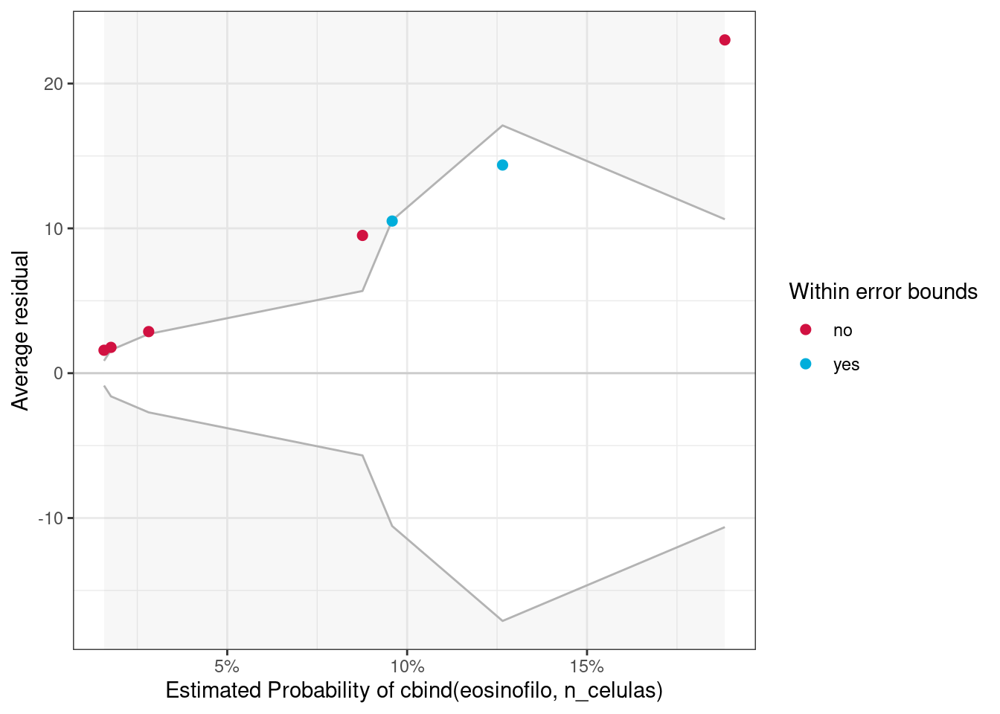
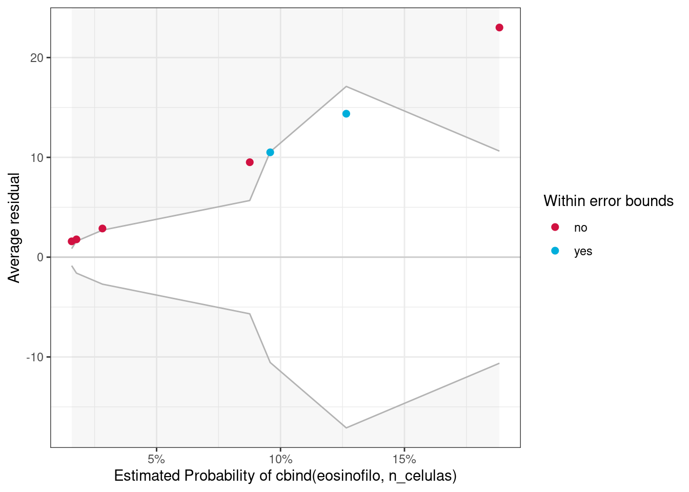
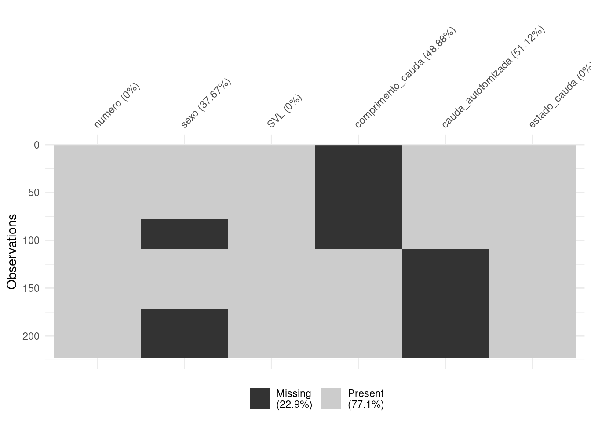
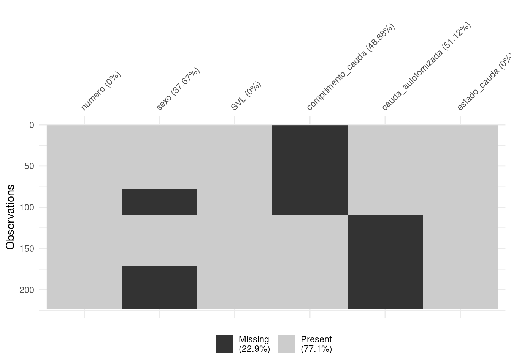
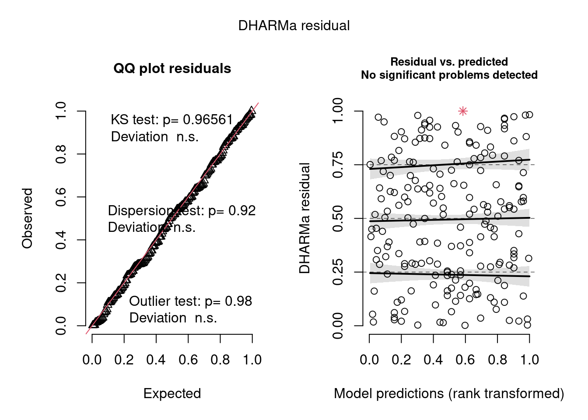
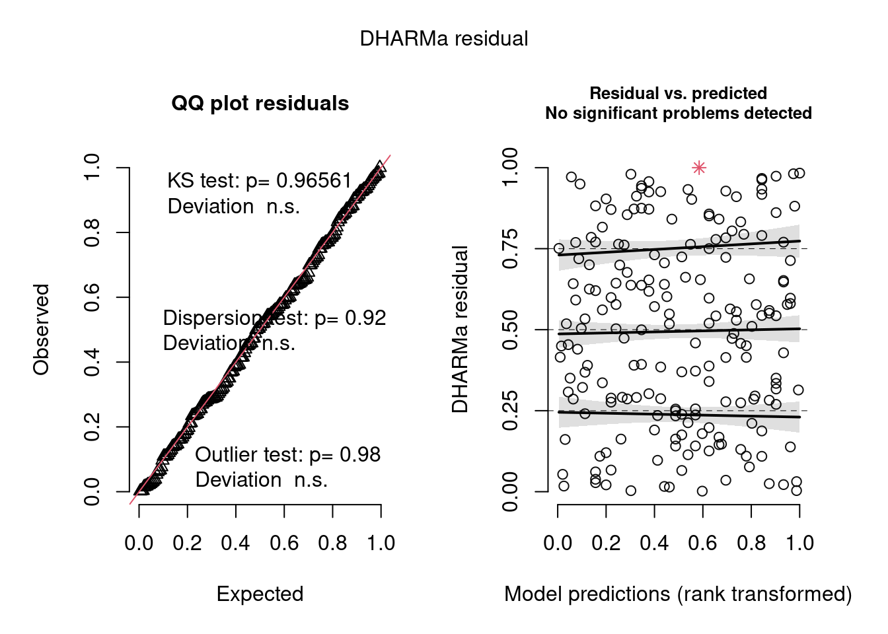

Capítulo 8 Modelos Lineares Generalizados
Pré-requisitos do capítulo
Pacotes e dados que serão utilizados nesse capítulo.
library(ecodados)
library(visdat)
library(tidyverse)
library(lattice)
library(RVAideMemoire)
library(DHARMa)
library(performance)
library(MuMIn)
library(piecewiseSEM)
library(MASS)
library(ggExtra)
library(Rmisc)
library(emmeans)
library(sjPlot)
library(bbmle)
library(glmmTMB)
library(ordinal)
library(car)
## Dados
lagartos <- ecodados::lagartos
parasitas <- ecodados::parasitas
fish <- ecodados::fish
fragmentos <- ecodados::fragmentos
uv_cells <- ecodados::uv_cells8.1 Introdução
No capítulo 7, descrevemos sobre os modelos lineares (também chamados de Modelos Lineares Gerais) que podem ser descritos pelo mesmo modelo matemático de uma equação da reta do tipo::
\[Y = \beta_0 + \beta_{1}X_i + \epsilon_i\]
Nesse tipo de estrutura, o que difere uma regressão linear de uma análise de variância é a natureza do elemento xi, variável contínua para a regressão lineare e variável categórica no caso da ANOVA (que é codificada numa matriz design para desenhos mais complexos). Nesse sentido, o que todos esses métodos têm em comum é a variável resposta Y que é um vetor numérico contínuo. Outro elemento em comum desses métodos é a distribuição de frequência do erro. Se quiser mais detalhes como sobre modelos lineares podem ser escritos na forma de matrizes, consulte a introdução de (Fox et al., 2015). Todos os modelos lineares assumem que a distribuição do erro seja Gaussiana (ou Normal). Isso de certa forma limita o tipo de dado que pode ser usado como variável resposta por estas análises. Por exemplo, dados de contagem (e.g., riqueza e/ou abundância de espécies), frequência (e.g., frequência de ocorrência, porcentagem de cobertura vegetal), incidência (e.g., presença ou ausência de uma espécie) ou proporção (e.g., números de animais infectados a cada 1000 animais) não são adequados para serem utilizados como variáveis resposta em modelos lineares. Uma prática comum quando nossos dados não são Normais é transformar por logarítmo ou raiz quadrada. No entanto, para dados de contagem isso não é recomendado - veja O’Hara & Kotze (2010), Ives (2015) e Warton (2018) para mais detalhes.
Nestes casos, devemos recorrer a um conjunto de modelos chamados Modelos Lineares Generalizados (GLM). Nestes modelos, o usuário especifica a distribuição de frequência que deseja utilizar para modelar a variável resposta. Esta distribuição de frequência deve pertencer à família exponencial, que inclui a distribuição de Poisson, Gaussiana, binomial, binomial negativa, Gamma, Bernoulli e Beta. Ainda é possível utilizar Cumulative Link Models para modelar dados ordinais (fatores cuja ordem dos elementos importa, tais como muito baixo, baixo, alto e muito alto). Abaixo vamos ver um pouco sobre como um GLM funciona e exemplos com cada uma destas distribuições.
8.2 Como um GLM funciona?
Diferentemente do modelo linear, um GLM estima os parâmetros por meio de Máxima Verossimilhança (ML) ao invés dos Mínimos Quadrados Comuns, também chamados de Mínimos Quadrados Ordinários (OLS).
Portanto, um GLM relaciona a distribuição da variável resposta aos preditores lineares por meio de uma função de ligação. Por exemplo, no caso da distribuição de Poisson, usa-se uma ligação logarítmica (também chamada de log link) que garante que o valores ajustados são sempre não negativos. Portanto, um GLM é composto por esses três componentes: i) função de distribuição, ii) preditor linear e iii) função de ligação. A função de distribuição é uma hipótese sobre a distribuição da variável resposta Yi. Isso também define a média e a variância de Yi. Já a função de ligação define a relação entre o valor médio de Yi e da parte sistemática. Esta é também chamada de ligação entre a média e a parte sistemática do modelo. Existem três tipos de função de ligação:
Identity link, que é definido por
g(µ) = μ, e modela a média ou valor esperado de Y. Usado em modelos lineares padrãoLog link, que é
g(μ) = log(μ), e modela o log da média. É usado para dados de contagem (que não podem assumir valores negativos) em modelos log-linearLogit link, que é
g(μ) = log[μ/(1-μ)], e é usado para dados binários e regressão logística
Logo, um modelo linear pode ser visto como um caso particular de um GLM em que utiliza distribuição Gaussiana, com identity link.
8.3 Como escolher a distribuição correta para seus dados?
8.3.1 Para dados contínuos
Se Y é uma variável contínua, a sua distribuição de probabilidade deve ser normal. Nesses casos as distribuições recomendadas são a Gaussiana (Normal) ou Gamma. Para essas distribuições, o parâmetro de dispersão é estimado separadamente da média e é às vezes, chamado de nuisance parameter. Uma particularidade da distribuição Gamma é que ela só aceita valores contínuos positivos.
8.3.2 Para dados de contagem
Se Y é binário (e.g., vivo ou morto), a distribuição de probabilidade deve ser binomial.
Se Y é uma contagem (e.g., abundância ou riqueza de espécies), então a distribuição de probabilidade deve ser Poisson ou binomial negativa. Existem também correções dessas distribuições quando apresentam sobredispersão (overdispersion), tais como quasi-Poisson ou quasi-Negative binomial. Falaremos delas no momento certo.
Para distribuições tais como binomial e Poisson, a variância deve ser igual à media e o parâmetro de dispersão é sempre 1. Na maioria dos dados ecológicos esse pressuposto não é cumprido, veremos estratégias para lidar com isso logo à frente.
As funções Ord_plot() e goodfit() do pacote vcd podem auxiliar na escolha da distribuição para dados de contagem.
8.4 Dados de contagem: a distribuição de Poisson
Para casos em que estamos interessados em quantificar uma variável discreta, ou seja, uma variável positiva, representada sempre por números inteiros, contendo um número finito de possibilidades, devemos utilizar a distribuição de Poisson. Esta distribuição é peculiar por ser descrita apenas por um parâmetro livre (\(\lambda\)). Isso quer dizer que tanto a média quanto a variância dos dados são descritos por um único parâmetro, o que implica em dizer que a média e a variância têm de ser iguais.
Vamos ver um exemplo com dados reais.
Exemplo 1
Explicação dos dados
Neste exemplo, iremos utilizar dados de riqueza de anfíbios anuros coletados em 40 poças, açudes e brejos ao redor de fragmentos florestais no Noroeste Paulista (Prado & Rossa-Feres, 2014). Os autores mediram seis variáveis em escala local e outras três em escala de paisagem.
Pergunta
A distância linear para o corpo d’água mais próximo influencia a abundância total de espécies de anuros?
Predições
Corpos d’água mais conectados permitem que indivíduos dispersem entre eles com maior facilidade, suportando melhor dinâmicas de metapopulações. Portanto, espero que poças que estejam mais conectadas entre si tenham maior riqueza total de anuros.
Variáveis
- Variável reposta: riqueza de anuros em 40 poças
- Variável preditora: distância da poça focal para a mais próxima na escala da paisagem
Checklist
- Verificar se o seu data frame está com as unidades amostrais nas linhas (neste caso poças) e variáveis nas colunas
Antes de começar com a análise, vamos primeiro explorar os dados.
## Explorar os dados
glimpse(fragmentos)
#> Rows: 40
#> Columns: 40
#> $ locality <chr> "MAC", "MAC", "MAC", "MAC", "MAC", "MAC", "NOV", "NOV", "NOV", "NOV", "PIN", "PIN", "PIN", "PIN", "P…
#> $ site <chr> "MacAc1", "MacAc2", "MacAc3", "MacAc4", "MacAc5", "MacBr1", "NovBr1", "NovBr2", "NovRe2", "NovRe3", …
#> $ Riqueza_obs <int> 3, 11, 10, 10, 3, 9, 2, 8, 9, 8, 6, 4, 8, 8, 6, 17, 15, 13, 8, 10, 12, 14, 14, 12, 8, 4, 10, 7, 13, …
#> $ Riqueza_HB <int> 6, 13, 12, 13, 6, 12, 5, 11, 12, 11, 8, 7, 10, 11, 9, 18, 17, 15, 11, 13, 14, 16, 16, 13, 11, 7, 13,…
#> $ Bsc <int> 0, 1, 1, 1, 0, 0, 0, 0, 0, 0, 0, 0, 1, 1, 0, 1, 0, 1, 0, 1, 0, 0, 1, 0, 1, 0, 1, 0, 1, 1, 0, 0, 1, 0…
#> $ Dne <int> 0, 0, 0, 1, 0, 0, 0, 0, 0, 0, 0, 0, 0, 0, 0, 1, 1, 0, 0, 0, 0, 0, 1, 0, 1, 0, 0, 0, 0, 1, 1, 1, 0, 0…
#> $ Dnm <int> 0, 1, 0, 1, 0, 0, 0, 1, 0, 0, 1, 0, 0, 0, 0, 1, 1, 0, 0, 0, 1, 0, 1, 1, 1, 0, 1, 1, 0, 1, 1, 1, 0, 1…
#> $ Dnn <int> 0, 1, 0, 1, 0, 1, 1, 1, 1, 1, 0, 1, 1, 1, 1, 1, 1, 1, 1, 1, 1, 1, 1, 1, 1, 1, 1, 0, 1, 1, 1, 1, 1, 1…
#> $ Dns <int> 0, 0, 0, 0, 0, 0, 0, 0, 1, 0, 0, 0, 1, 0, 0, 0, 1, 1, 1, 1, 0, 1, 0, 0, 0, 0, 0, 0, 1, 1, 1, 0, 1, 1…
#> $ Hal <int> 0, 0, 0, 1, 0, 1, 1, 1, 1, 1, 0, 1, 1, 1, 1, 0, 1, 1, 1, 1, 0, 0, 1, 1, 0, 0, 1, 0, 1, 0, 0, 0, 1, 1…
#> $ Hra <int> 0, 1, 1, 1, 0, 1, 0, 0, 1, 1, 0, 0, 0, 0, 0, 1, 1, 1, 0, 1, 1, 1, 1, 1, 0, 0, 1, 0, 1, 1, 1, 1, 1, 1…
#> $ Lfu <int> 0, 1, 1, 0, 1, 1, 0, 0, 0, 1, 1, 0, 0, 1, 1, 1, 1, 1, 1, 1, 1, 1, 1, 1, 1, 1, 1, 0, 1, 1, 1, 1, 1, 1…
#> $ Lla <int> 0, 0, 0, 0, 0, 1, 0, 0, 0, 0, 0, 0, 0, 0, 0, 0, 0, 0, 0, 0, 0, 0, 0, 1, 0, 0, 0, 0, 0, 1, 0, 0, 0, 0…
#> $ Lpo <int> 0, 1, 1, 1, 0, 0, 0, 1, 1, 1, 0, 1, 1, 1, 1, 1, 1, 1, 1, 1, 1, 1, 1, 0, 0, 0, 1, 0, 1, 1, 1, 1, 1, 1…
#> $ Eun <int> 1, 0, 1, 0, 1, 1, 0, 0, 0, 0, 0, 0, 0, 0, 0, 1, 0, 0, 0, 0, 1, 1, 0, 1, 1, 0, 1, 1, 1, 0, 0, 0, 0, 0…
#> $ Pce <int> 0, 0, 0, 0, 0, 0, 0, 0, 1, 0, 0, 0, 0, 0, 0, 1, 1, 0, 0, 0, 1, 1, 1, 1, 0, 0, 0, 1, 1, 1, 1, 1, 1, 0…
#> $ Pcu <int> 0, 1, 1, 1, 1, 1, 0, 1, 1, 1, 1, 1, 1, 1, 1, 1, 1, 1, 1, 1, 1, 1, 1, 1, 1, 1, 1, 1, 1, 1, 1, 1, 1, 1…
#> $ Pfa1 <int> 0, 1, 1, 1, 0, 1, 0, 0, 0, 0, 0, 0, 0, 0, 0, 1, 1, 1, 1, 1, 1, 1, 1, 1, 0, 0, 1, 1, 1, 1, 0, 1, 1, 0…
#> $ Ppa <int> 0, 1, 0, 0, 0, 0, 0, 1, 1, 1, 0, 0, 0, 0, 0, 1, 1, 1, 0, 0, 1, 1, 1, 0, 1, 0, 0, 1, 1, 1, 1, 1, 1, 1…
#> $ Sfm <int> 0, 1, 1, 1, 0, 0, 0, 1, 1, 1, 0, 0, 0, 1, 0, 1, 1, 1, 1, 1, 1, 1, 1, 0, 0, 0, 0, 0, 1, 1, 1, 0, 1, 1…
#> $ Sfv <int> 1, 0, 1, 0, 0, 0, 0, 1, 0, 0, 1, 0, 0, 1, 0, 1, 1, 0, 0, 0, 0, 0, 1, 1, 0, 0, 0, 1, 0, 1, 1, 1, 1, 1…
#> $ Ebi <int> 0, 1, 0, 0, 0, 0, 0, 0, 0, 0, 0, 0, 0, 0, 0, 1, 0, 0, 0, 0, 1, 1, 0, 0, 0, 0, 0, 0, 0, 1, 1, 1, 0, 1…
#> $ Esp <int> 1, 0, 0, 0, 0, 1, 0, 0, 0, 0, 1, 0, 1, 0, 1, 0, 0, 1, 0, 0, 0, 1, 0, 0, 0, 1, 0, 0, 0, 1, 0, 0, 0, 1…
#> $ hydrop <dbl> -2.553590, 0.573255, 0.573255, 0.573255, -2.553590, 0.573255, 0.573255, 0.573255, 0.573255, 0.573255…
#> $ hydrop2 <dbl> -2.235730, 0.606300, 0.606300, 0.606300, -2.235730, 0.606300, 0.606300, 0.606300, 0.606300, 0.606300…
#> $ vegcov <dbl> -1.461851, -1.145775, -0.987737, 0.908718, -1.461851, 1.382832, 1.382832, 1.698908, -0.829699, 0.118…
#> $ nveg <dbl> -1.965130, -0.158114, -1.061622, -0.158114, -1.965130, -0.158114, 0.745394, 1.648902, 0.745394, 1.64…
#> $ fish <dbl> -1.508310, 0.646419, -1.508310, 0.646419, -1.508310, -1.508310, 0.646419, 0.646419, 0.646419, 0.6464…
#> $ area <dbl> -2.418270, 0.147353, -0.564022, -0.348279, -2.315159, -0.601947, 1.556190, -0.255774, 0.875432, 1.29…
#> $ area2 <dbl> -1.884470, 0.019560, -0.699829, -0.497176, -1.844802, -0.734057, 1.877820, -0.406145, 0.907959, 1.49…
#> $ depth <dbl> -1.232668, 0.821168, -0.704539, 0.821168, -1.306019, -1.306019, -0.645858, -0.205750, 1.554680, 1.55…
#> $ forcov <dbl> -0.604596, -0.020849, -0.013816, -0.171663, 0.203364, 0.203364, 0.562496, -0.157193, -0.793258, -0.3…
#> $ forcov2 <dbl> -0.672774, -0.152952, -0.146124, -0.296136, 0.071358, 0.071358, 0.459151, -0.282666, -0.820946, -0.4…
#> $ forcov10 <dbl> -6.045965, -0.208489, -0.138159, -1.716633, 2.033643, 2.033643, 5.624958, -1.571928, -7.932582, -3.9…
#> $ dfrag <dbl> 0.410084, -0.097045, -1.242271, -1.242271, -0.471888, -1.242271, 1.307931, 1.557264, 0.479895, 0.966…
#> $ dfrag2 <dbl> 0.166782, -0.381401, -1.059858, -1.059858, -0.688845, -1.059858, 1.510271, 1.967926, 0.254153, 0.943…
#> $ dwater <dbl> 1.198175, 0.970207, -0.121245, -0.087507, 0.162610, -0.121245, -0.087507, -1.355308, 0.113584, -0.19…
#> $ dwater2 <dbl> 1.166645, 0.864035, -0.299232, -0.270350, -0.042156, -0.299232, -0.270350, -1.045428, -0.088840, -0.…
#> $ X <dbl> -49.9376, -49.9353, -49.9348, -49.9334, -49.9270, -49.9271, -49.2742, -49.3303, -49.3084, -49.3179, …
#> $ Y <dbl> -20.7408, -20.7410, -20.7419, -20.7462, -20.7453, -20.7451, -21.5187, -21.5282, -21.5024, -21.5148, …Percebam que o data frame contém 40 colunas. Neste conjunto de dados as variáveis preditoras já estão padronizadas com média 0 e desvio padrão 1. As variáveis com “2” indicam variáveis quadráticas (podem ser usadas para se testar relações não lineares). Também temos a riqueza observada e a estimada (Riqueza_HB) e as coordenadas geográficas (X e Y). Vamos agora explorar os dados e ver como é a relação entre riqueza e distância para a poça mais próxima. Sempre é recomendado visualizar os dados antes de efetivamente os modelar para se ter uma idéia da relação entre as variáveis (Figura 8.1).
## Gráfico
ggplot(fragmentos, aes(dfrag, Riqueza_obs)) +
geom_point(size = 4, alpha = 0.7) +
geom_smooth(method = "lm") +
labs(x = "Distância para o fragmento mais próximo",
y = "Riqueza observada") +
tema_livro()Figura 8.1: Gráfico pareado para explorar as variáveis.
Aqui vemos que há de fato uma relação linear positiva entre as duas variáveis.
- A partir de agora vamos sempre usar uma mesma estrutura para realizar nossos exercícios de modelagem:
- Primeiro vamos especificar o modelo
- Depois realizar a diagnose
- Por último realizar inferência a partir do nosso modelo
Modelagem
O primeiro argumento da função glm() é uma fórmula, em que na parte esquerda temos a variável resposta seguida do símbolo ~ (lê-se: modelado em função de) seguido pelas variáveis preditoras. Aqui podemos usar uma ou mais variáveis e testar o seu efeito aditivo (usando o sinal de +) ou a interação entre elas (usando o sinal de *). Um bom resumo sobre como especificar o seu modelo pode ser encontrada aqui neste blog. Aqui optamos por um modelo bem simples modelando a riqueza de anfíbios apenas em função da distância para o fragmento mais próximo.
## Modelo
mod_pois <- glm(Riqueza_obs ~ dfrag, family = poisson(link = "log"), data = fragmentos)Assim como modelos lineares que vimos no Capítulo 7, GLMs com distribuição de Poisson requerem que se realizem testes de pressupostos de normalidade e homogeneidade de variância dos resíduos, assim como sobredispersão e inflação de zeros.
Diagnose básica dos resíduos do modelo
Iremos realizar três diagnoses básicas dos GLMs, avaliando diferentes aspectos do modelo:
- Homogeneidade da variância e normalidade dos resíduos
- Sobredispersão (Overdispersion)
- Inflação de zeros (Zero-inflation)
Vamos começar avaliando as homogeneidade da variância e normalidade dos resíduos (Figura 8.2).
## Diagnose básica
par(mfrow = c(2, 2))
plot(mod_pois) Figura 8.2: Diagnose básica dos resíduos do modelo GLM Poisson.
Vemos que as linhas vermelhas (que indicam a tendência dos dados) estão praticamente retas seguindo a linha pontilhada, sugerindo que existe homogeneidade de variância dos resíduos. Vemos também que nos quatro plots alguns dados, 1, 7 e 30 (referem-se às linhas do data frame) aparecem identificados, pois apresentam ligeiro desvio da normalidade e estão distantes da média. No entanto, não é algo para nos preocuparmos, pois não são valores muito extremos. Portanto, a diagnose básica indicou que o modelo com Poisson parece ser adequado para modelar estes dados, ao menos em termos de homogeneidade de variância.
Diagnose avançada dos resíduos do modelo
Alguns pacotes permitem calcular outros aspectos do modelo que facilitam a diagnose, ou seja, se podemos de fato confiar nos parâmetros estimados por eles, incluindo valores de significância. Um pressuposto importante dos modelos de contagem (incluindo Poisson) é a sobredispersão (overdispersion).
Vejamos como o pacote DHARMa funciona (Figura 8.3).
## Diagnose avançada
simulationOutput <- simulateResiduals(fittedModel = mod_pois, plot = TRUE)
Figura 8.3: Diagnose avançada dos resíduos do modelo GLM Poisson.
O plot claramente indica que há problema com overdispersion, mas não em termos de desvios de normalidade (KS test) ou outlier, já que apenas o primeiro foi significativo (aparece em vermelho).
Detectando e lidando com overdispersion
O que é sobredispersão (overdispersion)? Ela ocorre quando a variância observada é muito maior do que aquela predita pelo modelo. Para modelos que utilizam a distribuição de Poisson, isso ocorre quando a variância aumenta com a média. Lembre-se de que esta distribuição tem apenas um único parâmetro para descrever tanto a média quanto a variância (\(\lambda\)). Portanto, a variância tem de ser igual à média. No entanto, se a variância nos dados observados for muito maior do que a média, dizemos que há sobredispersão nos dados.
Existem duas formas de diagnosticar overdispersion que estão implementadas na maioria dos pacotes. Aqui vamos demonstrá-las usando as funções check_overdispersion() e testDispersion() disponíveis nos pacotes performance e DHARMa, respectivamente.
A função testDispersion() do DHARMa utiliza um método de aleatorização dos resíduos para determinar se há overdispersion nos dados, cuja vantagem é que aborda diretamente a variação nos dados, ao invés de medir o ajuste do modelo em si, com outros testes (Figura 8.4).
## Overdispersion
par(mfrow = c(1, 1))
testDispersion(mod_pois) # modelo tem overdispersion
#>
#> DHARMa nonparametric dispersion test via sd of residuals fitted vs. simulated
#>
#> data: simulationOutput
#> dispersion = 1.6489, p-value < 2.2e-16
#> alternative hypothesis: two.sided
Figura 8.4: Teste de overdispersion do pacote DHARMa.
Aqui temos um gráfico e o resultado novamente do teste de overdispersion (que já aparecia no gráfico anterior) mostrando que de fato há overdispersion: perceba que o valor de P é significativo. O gráfico nos mostra em cinza a distribuição dos resíduos aleatorizados e a linha vermelha o valor observado da estatística. Já que a linha está bem à direita da distribuição, isso indica overdispersion, se estivese à esquerda seria o caso de underdispersion.
Agora vamos utilizar a função check_overdisperion() que utiliza uma distribuição qui-quadradado e o valor de dispersion ratio para testar a presença de overdispersion no modelo. Esse teste também pode ser feito com a função acima ao se especificar o argumento type="PearsonChisq".
## Testar a presença de overdispersion
check_overdispersion(mod_pois) # modelo tem overdispersion
#> # Overdispersion test
#>
#> dispersion ratio = 1.657
#> Pearson's Chi-Squared = 62.951
#> p-value = 0.007Quando este resultado é significativo, como vimos na última linha acima, isso indica que há overdispersion.
Usando a função summary() podemos ter um resumo e descrição dos parâmetros do modelo.
## Resumo do modelo
summary(mod_pois)
#>
#> Call:
#> glm(formula = Riqueza_obs ~ dfrag, family = poisson(link = "log"),
#> data = fragmentos)
#>
#> Deviance Residuals:
#> Min 1Q Median 3Q Max
#> -3.3467 -0.9110 0.0942 0.8336 2.2773
#>
#> Coefficients:
#> Estimate Std. Error z value Pr(>|z|)
#> (Intercept) 2.3051 0.0500 46.101 <2e-16 ***
#> dfrag 0.0718 0.0507 1.416 0.157
#> ---
#> Signif. codes: 0 '***' 0.001 '**' 0.01 '*' 0.05 '.' 0.1 ' ' 1
#>
#> (Dispersion parameter for poisson family taken to be 1)
#>
#> Null deviance: 70.868 on 39 degrees of freedom
#> Residual deviance: 68.856 on 38 degrees of freedom
#> AIC: 235.29
#>
#> Number of Fisher Scoring iterations: 4
## Dispersion parameter
deviance(mod_pois) / df.residual(mod_pois)
#> [1] 1.81199Na parte de baixo do output da função summary() também podemos calcular o dispersion parameter dividindo o residual deviance pelos graus de liberdade dos resíduos. Esta é outra maneira fácil e rápida de detectar overdispersion. Neste exemplo, temos que Dispersion parameter = 1.8119903. Quando esse valor é próximo de 1, isso sugere que não há overdispersion. No entanto, se ele for maior que 1.5, isso sugere que o modelo sofre de overdispersion e que devemos usar outra distribuição, tal como a distribuição binomial negativa, por exemplo.
Além disso, uma outra forma de diagnosticar o modelo é calcular os resíduos de Pearson (resíduos normalizados), que é basicamente a raiz quadrada da variância da variável resposta.
Inflação de zeros
Qualquer das formas mostradas acima de diagnosticar overdispersion pode ser usada na maioria das vezes, com exceção de dados com muitos zeros (pouca variância). Por isso, devemos também testar se o nosso modelo sofre de inflação de zeros. Vejamos como isso funciona usando as funções check_zeroinflation() no pacote performanace e testZeroInflation() no pacote DHARMa (Figura 8.5).
## Inflação de zeros - performanace
check_zeroinflation(mod_pois) # para diagnosticar se o modelo sofre de zero inflation
#> Model has no observed zeros in the response variable.
#> NULL
## Inflação de zeros - DHARMa
testZeroInflation(mod_pois) # para testar se existe zero inflation
#>
#> DHARMa zero-inflation test via comparison to expected zeros with simulation under H0 = fitted model
#>
#> data: simulationOutput
#> ratioObsSim = NaN, p-value = 1
#> alternative hypothesis: two.sided
Figura 8.5: Teste de inflação de zeros do pacote DHARMa.
Tanto a função do DHARMa quanto do performance conseguiram detectar que o modelo tem problemas com overdispersion, mas isso não é causado pelo excesso de zeros. Como já dissemos acima, no caso da distribuição Poisson, tanto a média quanto a variância são modeladas pelo mesmo parâmetro (\(\lambda\)). Isso faz com que esta distribuição não seja muito útil para modelar dados de contagem em que haja muita variância em torno da média. Esse infelizmente é o caso da grande maioria dos dados ecológicos.
Por estes motivos, não podemos fazer inferência com este modelo porque os parâmetros estimados não são confiáveis. Mas vejamos como seria feita essa inferência caso este modelo fosse adequado.
Inferência
Aqui iremos apresentar várias funções para calcular o coeficiente de determinação (R2). No caso de GLM(M)s, não há um consenso sobre como se calcula este coeficiente, havendo várias propostas que utilizam maneiras diferentes de estimar a homogeneidade de variância e covariância entre observações dos resíduos, veja (Nakagawa et al., 2017) e (Ives, 2015) para maiores detalhes, assim como o help das respectivas funções.
## Coeficientes estimados pelo modelo
summary(mod_pois)
#>
#> Call:
#> glm(formula = Riqueza_obs ~ dfrag, family = poisson(link = "log"),
#> data = fragmentos)
#>
#> Deviance Residuals:
#> Min 1Q Median 3Q Max
#> -3.3467 -0.9110 0.0942 0.8336 2.2773
#>
#> Coefficients:
#> Estimate Std. Error z value Pr(>|z|)
#> (Intercept) 2.3051 0.0500 46.101 <2e-16 ***
#> dfrag 0.0718 0.0507 1.416 0.157
#> ---
#> Signif. codes: 0 '***' 0.001 '**' 0.01 '*' 0.05 '.' 0.1 ' ' 1
#>
#> (Dispersion parameter for poisson family taken to be 1)
#>
#> Null deviance: 70.868 on 39 degrees of freedom
#> Residual deviance: 68.856 on 38 degrees of freedom
#> AIC: 235.29
#>
#> Number of Fisher Scoring iterations: 4
## Calculando o R2 do modelo
r.squaredGLMM(mod_pois)
#> R2m R2c
#> delta 0.04925800 0.04925800
#> lognormal 0.05154558 0.05154558
#> trigamma 0.04696308 0.04696308
rsquared(mod_pois)
#> Response family link method R.squared
#> 1 Riqueza_obs poisson log nagelkerke 0.04919844
r2(mod_pois)
#> # R2 for Generalized Linear Regression
#> Nagelkerke's R2: 0.059Podemos ver que os valores de R2 são bem baixos (em torno de 4 - 5%), independente do método que usamos pra calculá-lo.
Plot do modelo predito
Vamos realizar a visualização do ajusto do modelo Poisson (Figura 8.6).
a1 <- ggplot(fragmentos, aes(dfrag, Riqueza_obs)) +
geom_point(cex = 4,alpha = 0.7) +
geom_smooth(method = "glm", formula = y~x,
method.args = list(family = "poisson"), se = TRUE) +
labs(x = "Distância para o fragmento mais próximo",
y = "Riqueza observada") +
tema_livro()
ggMarginal(a1, fill = "red")Figura 8.6: Gráfico do GLM Poisson.
📝 Importante
Aqui vemos que há uma leve tendência na relação positiva entre distância para o fragmento mais próximo e a riqueza de anfíbios observada. No entanto, há uma grande dispersão nos dados ao redor da reta do modelo, fazendo com que a relação não seja de fato significativa e tenhamos um R2 bem baixo.
Caso pudéssemos confiar nos parâmetros deste modelo, poderíamos dizer que existe uma leve tendência a um aumento da riqueza observada de anfíbios anuros à medida que aumenta a distância da poça para o fragmento mais próximo.
8.4.1 O que causa a overdispersion?
Existem dois conjuntos de causas: aparente ou real.
As causas aparentes são geradas pela má especificação do modelo, tais como:
- não inclusão de covariáveis ou interações no modelo
- presença de outliers na variável resposta, efeitos não lineares da covariável (X2, X3…)
- escolha errada da função de ligação (link function)
As causas reais incluem:
- variância maior que a média
- muitos zeros
- agregação de observações
- correlação entre observações (não independência)
8.4.2 O que fazer se seu modelo tiver overdispersion?
Depois de tentar corrigir possíveis más especificações, como as listadas acima, existem duas alternativas:
- usar outra distribuição, tal como binomial negativa, caso o dispersion parameter seja maior que 15 ou 20
- Usar um modelo com correção de erro da sobredispersão, caso 1.5 < dispersion > 15
Geralmente, dados de contagem em estudos ecológicos não seguem uma distribuição Poisson, pois há muita dispersão (variância) nos dados. Logo, o pressuposto da distribuição Poisson, i.e., de que a média e variância são descritas por um mesmo parâmetro (\(\lambda\)) é quebrado.
Como vimos, overdispersion é um problema comum ao analisar dados ecológicos e deve necessariamente ser diagnosticado no modelo. Uma maneira de lidar com esse tipo de problema é utilizar uma outra distribuição diferente da Poisson. A binomial negativa pode ser entendida como uma mistura da distibuição Poisson e Gamma, ou seja, ela aceita dados de contagem que sejam positivos, mas sem zero. A grande vantagem desta distribuição é que, diferentemente da Poisson, ela tem um parâmetro para modelar a média (\(\lambda\)) e outro para modelar a variância (k). Logo, ela permite modelar dados em que a média é diferente da variância. Vejamos um exemplo.
Aqui vamos continuar com estes dados para ver como o modelo se comporta com essa nova distribuição especificada. Para isso vamos utilizar a função glm.nb do pacote MASS.
Modelagem
## Ajuste do modelo
mod_nb <- glm.nb(Riqueza_obs ~ dfrag, data = fragmentos)Diagnose resíduos
Assim como fizemos com o modelo com Poisson, vamos agora diagnosticar os resíduos (Figura 8.7).
## Diagnose
par(mfrow = c(2, 2))
plot(mod_nb)
par(mfrow = c(1, 1))
(chat <- deviance(mod_nb) / df.residual(mod_nb)) # DISPERSION PARAMETER
#> [1] 1.126184
Figura 8.7: Diagnose básica dos resíduos do modelo GLM binomial Negativo.
Compare estes gráficos (Figura ??) com os do modelo anterior com distribuição Poisson (Figura 8.2). Eles são praticamente idênticos, ou seja, o modelo com Poisson já tinha homogeneidade de variância e não tinha problemas com normalidade dos resíduos. Agora vejamos se o problema com overdispersion foi resolvido (Figura 8.8).
## Diagnose avançada
simulationOutput <- simulateResiduals(fittedModel = mod_nb, plot = TRUE)Figura 8.8: Diagnose avançada dos resíduos do modelo GLM binomial Negativo.
Na diagnose do modelo pelo DHARMa, vemos que bastou mudar a distribuição de probabilidade que o problema de overdispersion foi resolvido (nenhum teste foi significativo no quadro da esquerda), e como já sabíamos, não há problemas com homogeneidade de variância (plot da direita mostrando a tendência entre o predito e resíduos pra cada quantil), nem de outliers. O dispersion parameter é mais próximo de 1 do que no modelo com Poisson. Agora sim podemos levar em conta o R2.
Inferência
## Coeficiente de determinação
rsquared(mod_nb)
#> Response family link method R.squared
#> 1 Riqueza_obs Negative Binomial(14.7068) log nagelkerke 0.02935674Mas esse valor parece ser um pouco menor do que anteriormente. Perceba que aqui utilizamos somente uma das funções apresentadas anteriormente, já que se trata de um modelo GLM com binomial negativa, calculamos o R2 pelo método de Nagelkerke.
Interpretação dos resultados
Usando a função summary() podemos ter um resumo e descrição dos parâmetros do modelo.
## Coeficientes estimados pelo modelo
summary(mod_nb)
#>
#> Call:
#> glm.nb(formula = Riqueza_obs ~ dfrag, data = fragmentos, init.theta = 14.70679964,
#> link = log)
#>
#> Deviance Residuals:
#> Min 1Q Median 3Q Max
#> -2.7569 -0.7068 0.0694 0.6194 1.6546
#>
#> Coefficients:
#> Estimate Std. Error z value Pr(>|z|)
#> (Intercept) 2.30504 0.06481 35.567 <2e-16 ***
#> dfrag 0.07248 0.06571 1.103 0.27
#> ---
#> Signif. codes: 0 '***' 0.001 '**' 0.01 '*' 0.05 '.' 0.1 ' ' 1
#>
#> (Dispersion parameter for Negative Binomial(14.7068) family taken to be 1)
#>
#> Null deviance: 44.002 on 39 degrees of freedom
#> Residual deviance: 42.795 on 38 degrees of freedom
#> AIC: 231.68
#>
#> Number of Fisher Scoring iterations: 1
#>
#>
#> Theta: 14.71
#> Std. Err.: 8.62
#>
#> 2 x log-likelihood: -225.68 📝 Importante
Aqui vemos que o resultado em termos de valor de P não mudou, ou seja, a distância para o fragmento mais próximo não foi significativo. Mas vejam que o coeficiente (slope) mudou um pouco, antes era 0.0718 (SE=0.0507) e com binomial negativa passa a ser 0.07248 (SE=0.06571).
Plot do modelo predito
Vamos realizar a visualização do ajusto do modelo binomial Negativo (Figura 8.9).
## Gráfico
ggplot(fragmentos, aes(dfrag, Riqueza_obs)) +
geom_point(size = 4, alpha = 0.7) +
geom_smooth(method = "glm.nb", formula = y~x, se = TRUE) +
labs(x = "Distância para o fragmento mais próximo",
y = "Riqueza observada") +
tema_livro()Figura 8.9: Gráfico do GLM binomial Negativo.
Aqui vemos que a reta predita pelo modelo é muito similar ao que tivemos com o modelo Poisson. No entanto, agora que sabemos que este modelo com binomial negativa foi corretamente especificado e podemos confiar nos parâmetros estimados.
8.5 Dados de contagem: modelos quasi-likelihood
Como dissemos acima, uma outra alternativa para ajustar modelos GLM a dados de contagem são os chamados “quasi-likelihood,” tais como quasi-Poisson e quasi-binomial. Dependendo do valor do dispersion parameter, pode ser útil escolher este tipo de modelo. No entanto, eles vêm com uma desvantagem: não é possível calcular o valor de Akaike Information Criterion (AIC) porque estes modelos não retornam um valor de likelihood (verosimilhança). Este parâmetro é comumente utilizado em abordagens estatísticas de teoria da informação para selecionar o melhor modelo que se ajusta aos dados. Neste caso, precisamos utilizar outras funções disponíveis nos pacotes MuMIn, AICcmodavg e bbmle para calcular o QAIC. Para mais detalhes sobre esses modelos, veja o vignette sobre o assunto do pacote bbmle.
Análise
Aqui vamos apenas exemplificar como um modelo com distribuição quasi-poisson pode ser especificado.
## Modelo
mod_quasipois <- glm(Riqueza_obs ~ dfrag, family = quasipoisson(link = "log"), data = fragmentos)Diagnose dos resíduos
A função resid não leva em conta a sobredispersão e temos de calcular manualmente o parâmetro de dispersão e inclui-lo no plot. Portanto, não podemos realizar a diagnose de modelos quasi-Poisson apenas com a função plot como fazíamos até então. Então, calculamos primeiramente os resíduos de Pearson e depois dividindo-o pela raiz quadrada do parâmetro de dispersão (Figura 8.10).
## Diagnose dos resíduos
EP <- resid(mod_quasipois, type = "pearson")
ED <- resid(mod_quasipois, type = "deviance")
mu <- predict(mod_quasipois, type = "response")
E <- fragmentos$Riqueza_obs - mu
EP2 <- E / sqrt(1.65662 * mu) # dispersion parameter da quasipoisson
op <- par(mfrow = c(2, 2))
plot(x = mu, y = E, main = "Response residuals")
plot(x = mu, y = EP, main = "Pearson residuals")
plot(x = mu, y = EP2, main = "Pearson residuals scaled")
plot(x = mu, y = ED, main = "Deviance residuals")
par(op)
par(mfrow = c(1, 1))
Figura 8.10: Diagnose dos resíduos do modelo GLM Quasi-Poisson.
Aqui vemos que não existe um padrão claro nos resíduos, muito similar ao que tínhamos anteriormente. Devido às limitações de distribuições “quasi” e dado que já temos um modelo adequado com binomial negativa, sugerimos interpretar apenas o modelo anterior com binomial negativa.
8.6 Dados de contagem: a distribuição binomial
Quando temos dados de proporção (e.g., número de doentes por 1000 habitantes) ou incidência (i.e., presença ou ausência), a distribuição mais adequada para modelar os dados é a distribuição binomial. No entanto, temos que especificar o modelo de acordo com o tipo dos dados no argumento formula. Vejamos dois exemplos.
8.6.1 Análise com dados de proporção
Neste exemplo, vamos ver como podemos modelar a proporção de células sanguíneas em função do tipo de tratamento.
Explicação dos dados
Este conjunto de dados foi coletado por (Franco-Belussi et al., 2018). Os autores utilizaram um desenho experimental típico de uma 2x5 ANOVA fatorial (ou two-way ANOVA) em que temos dois tratamentos (fatores): pigmentação do girino com dois níveis (Yes e No) e Tempo de exposição com cinco níveis (controle sem UV, 6 h, 12 h, 18 h e 24 h de exposição à UV).
Pergunta
A melanina proteje girinos contra os efeitos da radiação ultravioleta?
Predições
Como a melanina participa do sistema imune inato, ela desempenharia um papel na resposta do organismo à radiação UV, auxiliando as células imunes a combater os seus efeitos deletérios.
Variáveis
- Variável resposta: Contagem diferencial de eosinófilos
- data frame com 10 girinos em cada tratamento, totalizando 50 girinos
## Dados
head(uv_cells)
#> UV Pigmentation Total_Cell Lymphocyte Neutrophil Basophil Monocyte Eosinophil
#> 1 1.CT Yes 100 80 18 0 0 2
#> 2 1.CT Yes 100 74 17 6 0 3
#> 3 1.CT Yes 100 78 22 0 0 0
#> 4 1.CT Yes 100 87 13 0 0 0
#> 5 1.CT Yes 100 74 21 1 0 4
#> 6 2.6h Yes 100 95 4 0 0 1
## Traduzir nomes das colunas e níveis de pigmentação
colnames(uv_cells) <- c("UV", "Pigmentacao", "n_celulas", "linfocito", "neutrofilo", "basofilo", "monocito", "eosinofilo")
uv_cells$Pigmentacao[uv_cells$Pigmentacao=="Yes"] <- "sim"
uv_cells$Pigmentacao[uv_cells$Pigmentacao=="No"] <- "nao"Vamos explorar os dados para tentar entender como são as relações (Figura 8.11).
## Gráfico
# Calcular média e intervalo de confiança
eosinofilo <- summarySE(uv_cells,
measurevar = "eosinofilo",
groupvars = c("UV", "Pigmentacao"))
# Definir posição de linhas e pontos no gráfico
pd <- position_dodge(0.1)
eosinofilo %>%
ggplot(aes(x = UV, y = eosinofilo, colour = Pigmentacao,
group = Pigmentacao, fill = Pigmentacao)) +
geom_errorbar(aes(ymin=eosinofilo-se, ymax=eosinofilo +se),
width=.1, size = 1.1, position=pd) +
geom_line(position=pd, size = 1.1) +
geom_point(pch = 21, colour = "black", position=pd, size=3.5) +
scale_colour_manual(values = c("darkorange", "cyan4")) +
scale_fill_manual(values = c("darkorange", "cyan4")) +
labs(x = "UV", y = "Eosinófilo", fill="Pigmentação", colour="Pigmentação")+
tema_livro()Figura 8.11: Gráfico para explorar as relações entre as variáveis.
Aqui vemos que a quantidade de eosinófilos é muito maior nos girinos sem pigmentação (“albinos”). Já que estes animais não têm pigmentação melânica, as células brancas do sangue são a única ferramenta de combate aos efeitos deletérios da UV.
Modelagem
Aqui vamos usar o cbind no argumento formula para dizer que queremos modelar a contagem de eosinófilos em relação ao número total de células, ou seja, sua proporção. Aqui temos a contagem do número de eusinófilos (um tipo de célula da série branca do sangue) em lâminas histológicas de girinos da rã-touro (Lithobates catesbeianus) num total de 1000 células.
## Modelo
mod1 <- glm(cbind(eosinofilo, n_celulas) ~ UV * Pigmentacao, family = binomial, data = uv_cells)Diagnose básica dos resíduos do modelo
Vamos fazer a diagnose básica dos resíduos do modelo (Figura 8.12).
## Diagnose dos resíduos
par(mfrow = c(2, 2))
plot(mod1)
par(mfrow = c(1, 1))
Figura 8.12: Diagnose básica dos resíduos do modelo GLM binomial.
Parece que os resíduos não sofrem de heterogeneidade de variância (linha vermelha está reta), mas parece haver um pequeno desvio da normalidade (veja pontos 19, 29 e 32 destacados no plot de quantis e no de outliers). Vejamos o que o DHARMa nos diz (Figura 8.13).
## Diagnose avançada
simulationBion <- simulateResiduals(fittedModel = mod1, plot = TRUE)
binned_residuals(mod1)
#> Warning: Probably bad model fit. Only about 29% of the residuals are inside the error bounds. 

Figura 8.13: Diagnose avançada dos resíduos do modelo GLM binomial.
Aqui já não resta dúvidas de que os resíduos deste modelo sofrem tanto com heterogeneidade de variância, quanto overdispersion e problemas com outliers. Provavelmente o problema com outliers ocorreu por conta do pequeno tamanho amostral.
Inferência
Sabemos que o modelo não parece ser adequado para os dados, mas vamos interpretá-lo mesmo assim para que possamos entender a saída da função summary() e os contrastes entre os níveis dos fatores.
## Coeficientes estimados pelo modelo
summary(mod1)
#>
#> Call:
#> glm(formula = cbind(eosinofilo, n_celulas) ~ UV * Pigmentacao,
#> family = binomial, data = uv_cells)
#>
#> Deviance Residuals:
#> Min 1Q Median 3Q Max
#> -5.4165 -2.5266 -1.0148 0.8068 8.8233
#>
#> Coefficients:
#> Estimate Std. Error z value Pr(>|z|)
#> (Intercept) -1.84516 0.12107 -15.241 < 2e-16 ***
#> UV2.6h -0.17979 0.17835 -1.008 0.3134
#> UV3.12h 0.38414 0.15899 2.416 0.0157 *
#> UV4.18h -0.49825 0.19363 -2.573 0.0101 *
#> UV5.24h -0.39916 0.18848 -2.118 0.0342 *
#> Pigmentacaosim -2.17222 0.35745 -6.077 1.22e-09 ***
#> UV2.6h:Pigmentacaosim -0.07152 0.53831 -0.133 0.8943
#> UV3.12h:Pigmentacaosim -0.38414 0.50150 -0.766 0.4437
#> UV4.18h:Pigmentacaosim 1.13424 0.45981 2.467 0.0136 *
#> UV5.24h:Pigmentacaosim 0.68684 0.48370 1.420 0.1556
#> ---
#> Signif. codes: 0 '***' 0.001 '**' 0.01 '*' 0.05 '.' 0.1 ' ' 1
#>
#> (Dispersion parameter for binomial family taken to be 1)
#>
#> Null deviance: 737.36 on 49 degrees of freedom
#> Residual deviance: 460.85 on 40 degrees of freedom
#> AIC: 610.35
#>
#> Number of Fisher Scoring iterations: 5
anova(mod1)
#> Analysis of Deviance Table
#>
#> Model: binomial, link: logit
#>
#> Response: cbind(eosinofilo, n_celulas)
#>
#> Terms added sequentially (first to last)
#>
#>
#> Df Deviance Resid. Df Resid. Dev
#> NULL 49 737.36
#> UV 4 26.034 45 711.32
#> Pigmentacao 1 235.682 44 475.64
#> UV:Pigmentacao 4 14.789 40 460.85Aqui temos tanto a tabela com os resultados por níveis dos fatores (summary()), quanto a tabela com a Deviance que mostra os fatores e suas interações (anova()). Vemos que nenhum fator foi significativo. Caso houvesse algum fator significativo, poderíamos testar a significância de cada nível dos fatores usando contrastes, desta forma.
## Parâmetros
pairs(emmeans(mod1, ~ UV|Pigmentacao))
#> Pigmentacao = nao:
#> contrast estimate SE df z.ratio p.value
#> 1.CT - 2.6h 0.1798 0.178 Inf 1.008 0.8518
#> 1.CT - 3.12h -0.3841 0.159 Inf -2.416 0.1109
#> 1.CT - 4.18h 0.4982 0.194 Inf 2.573 0.0753
#> 1.CT - 5.24h 0.3992 0.188 Inf 2.118 0.2124
#> 2.6h - 3.12h -0.5639 0.167 Inf -3.384 0.0064
#> 2.6h - 4.18h 0.3185 0.200 Inf 1.593 0.5021
#> 2.6h - 5.24h 0.2194 0.195 Inf 1.125 0.7933
#> 3.12h - 4.18h 0.8824 0.183 Inf 4.824 <.0001
#> 3.12h - 5.24h 0.7833 0.177 Inf 4.414 0.0001
#> 4.18h - 5.24h -0.0991 0.209 Inf -0.474 0.9897
#>
#> Pigmentacao = sim:
#> contrast estimate SE df z.ratio p.value
#> 1.CT - 2.6h 0.2513 0.508 Inf 0.495 0.9879
#> 1.CT - 3.12h 0.0000 0.476 Inf 0.000 1.0000
#> 1.CT - 4.18h -0.6360 0.417 Inf -1.525 0.5461
#> 1.CT - 5.24h -0.2877 0.445 Inf -0.646 0.9675
#> 2.6h - 3.12h -0.2513 0.508 Inf -0.495 0.9879
#> 2.6h - 4.18h -0.8873 0.454 Inf -1.957 0.2876
#> 2.6h - 5.24h -0.5390 0.480 Inf -1.123 0.7942
#> 3.12h - 4.18h -0.6360 0.417 Inf -1.525 0.5461
#> 3.12h - 5.24h -0.2877 0.445 Inf -0.646 0.9675
#> 4.18h - 5.24h 0.3483 0.382 Inf 0.911 0.8928
#>
#> Results are given on the log odds ratio (not the response) scale.
#> P value adjustment: tukey method for comparing a family of 5 estimatesAqui temos o valor de cada combinação de níveis dos fatores, com seu respectivo valor de contraste e o valor de P. Vemos que para girinos sem pigmentação, apenas três contrastes foram significativos.
Plot do modelo predito
Vamos realizar a visualização do ajusto do modelo binomial (Figura 8.14).
ggplot(uv_cells, aes(UV, eosinofilo)) +
geom_violin(aes(color = Pigmentacao)) +
geom_jitter(shape = 16, position = position_jitter(0.1), cex = 4, alpha = 0.7) +
scale_colour_manual(values = c("darkorange", "cyan4")) +
tema_livro()Figura 8.14: Gráfico do GLM binomial.
Usando o geom_violin(), podemos perceber que existe uma dispersão maior nos tratamentos que utilizaram girinos sem pigmentação do que nos tratamentos com girinos pigmentados.
8.7 Análise com dados de incidência
Uma outra aplicação da distribuição binomial é quando temos dados de incidência, ou seja, presença ou ausência, de alguma variável. Por exemplo, presença ou ausência de uma espécie ou indivíduo num local. Neste caso a formula é diferente e o modelo é similar a uma regressão logística, vejamos.
Aqui vamos utilizar os dados sobre autotomia da cauda de lagartos da espécie Coleodactylus meridionalis observados em fragmentos florestais da Mata Atlântica no estado de Pernambuco (C. N. Oliveira et al., 2020).
Pergunta
A probabilidade de lagartos da espécie Coleodactylus meridionalis perderem (autotomizarem) a cauda aumenta com o tamanho do corpo e de acordo com o sexo dos lagarto?
Predições
Quanto maior o lagarto, maior a probabilidade de autotomia da cauda e que esta resposta poderia também diferir entre sexos devido ao dimorfismo sexual.
Variáveis
- Variável resposta: Presença ou ausência de cauda autotomizada em lagartos encontrados por busca ativa
Exploração dos dados
Este conjunto de dados possui muitas entradas faltantes (codificadas como NA). Primeiro vamos visualizar o conjunto de dados e depois precisamos remover as linhas que contêm dados faltantes. Aqui podemos usar a função interna do ggplot2::remove_missing() para remover linhas cujas variáveis informadas no argumento estejam faltando, vejamos (Figura 8.15).
## Traduzir nomes das colunas e níveis de pigmentação
head(lagartos)
#> Numero Sex SVL Intact_tail_length Autotomized_tail_length Tail_state
#> 1 2 Male 20.70 NA 12.88 0
#> 2 3 Male 21.10 NA 13.07 0
#> 3 6 Female 23.72 NA 17.56 0
#> 4 9 Male 18.84 17.38 NA 1
#> 5 21 Male 22.20 NA 16.50 0
#> 6 22 <NA> 20.59 NA 12.46 0
colnames(lagartos) <- c("numero", "sexo", "SVL", "comprimento_cauda", "cauda_autotomizada", "estado_cauda")
## Dados faltantes
vis_dat(lagartos)
vis_miss(lagartos, cluster = TRUE) # 22.9% dos dados estão faltando
dados_semNA <- remove_missing(lagartos, vars = "sexo") # excluindo linhas com dados faltantes para a variável Sex
vis_miss(dados_semNA)
dim(dados_semNA) # verificar as dimensões da tabela depois que os dados tiverem sido excluídos
#> [1] 139 6 

Figura 8.15: Gráficos para explorar os dados faltantes.
Agora, seguindo o que já estamos acostumados a fazer, vamos vizualisar os dados com a nossa hipótese (Figura 8.16).
## Gráfico
ggplot(dados_semNA, aes(SVL, estado_cauda)) +
geom_point(aes(shape = sexo, colour = sexo), size = 4, alpha = 0.4) +
geom_smooth(method = "glm", method.args = list(family = "binomial")) +
labs(y = "Estado da Cauda", x = "Comprimento Rostro-Cloacal (mm)", shape = "Sexo", colour = "Sexo") +
tema_livro()Figura 8.16: Gráfico para explorar as relações entre as variáveis.
Modelagem
Aqui vamos construir dois modelos com a mesma distribuição binomial, mas com dois link function: logit e probit. A função logit possui caudas um pouco mais achatadas, isto é, a curva probit se aproxima dos eixos mais rapidamente que a logit. Geralmente não há muita diferença entre elas. Como não temos nenhuma expectativa de qual dos dois link function é o melhor, podemos fazer uma seleção de modelos.
## Modelos
mod_log <- glm(estado_cauda ~ SVL * sexo, data = dados_semNA, family = binomial(link = "logit"))
mod_pro <- glm(estado_cauda ~ SVL * sexo, data = dados_semNA, family = binomial(link = "probit"))
# Seleção de modelos
AICctab(mod_log, mod_pro, nobs = 139)
#> dAICc df
#> mod_pro 0.0 4
#> mod_log 0.1 4Existe pouca diferença entre o modelo probit e logit. Como o modelo logit é mais simples vamos interpretá-lo apenas.
Diagnose dos resíduos do modelo
Vamos fazer a diagnose dos resíduos do modelo (Figura 8.17).
## Diagnóse avançada
simulationBion <- simulateResiduals(fittedModel = mod_log, plot = T)
binned_residuals(mod_log)
#> Warning: About 92% of the residuals are inside the error bounds (~95% or higher would be good).
Figura 8.17: Diagnose avançada dos resíduos do modelo GLM binomial de incidência.
Inferência
Para modelos com parâmetro de dispersão conhecida (e.g., binomial e Poisson), o chi-quadrado é a estatística mais apropriada.
## Coeficientes estimados pelo modelo
summary(mod_log)
#>
#> Call:
#> glm(formula = estado_cauda ~ SVL * sexo, family = binomial(link = "logit"),
#> data = dados_semNA)
#>
#> Deviance Residuals:
#> Min 1Q Median 3Q Max
#> -1.5694 -1.0449 -0.8196 1.2181 1.6310
#>
#> Coefficients:
#> Estimate Std. Error z value Pr(>|z|)
#> (Intercept) 5.5834 2.5909 2.155 0.0312 *
#> SVL -0.2678 0.1178 -2.274 0.0230 *
#> sexoMale 0.6977 4.4055 0.158 0.8742
#> SVL:sexoMale -0.0442 0.2085 -0.212 0.8321
#> ---
#> Signif. codes: 0 '***' 0.001 '**' 0.01 '*' 0.05 '.' 0.1 ' ' 1
#>
#> (Dispersion parameter for binomial family taken to be 1)
#>
#> Null deviance: 191.07 on 138 degrees of freedom
#> Residual deviance: 181.38 on 135 degrees of freedom
#> AIC: 189.38
#>
#> Number of Fisher Scoring iterations: 4
anova(mod_log, test = "Chisq" )
#> Analysis of Deviance Table
#>
#> Model: binomial, link: logit
#>
#> Response: estado_cauda
#>
#> Terms added sequentially (first to last)
#>
#>
#> Df Deviance Resid. Df Resid. Dev Pr(>Chi)
#> NULL 138 191.07
#> SVL 1 9.2563 137 181.82 0.002347 **
#> sexo 1 0.3920 136 181.43 0.531262
#> SVL:sexo 1 0.0454 135 181.38 0.831292
#> ---
#> Signif. codes: 0 '***' 0.001 '**' 0.01 '*' 0.05 '.' 0.1 ' ' 1Interpretação dos resultados
A interpretação dos resultados é que o tamanho de corpo (SVL) afeta negativamente a probabilidade da cauda estar intacta, i.e., com o aumento do tamanho, a probabilidade da cauda permanecer intacta diminui. A interação não foi significativa, então o efeito é independente do sexo dos lagartos.
8.8 Dados de contagem com excesso de zeros
Quando se analisa a abundância ou riqueza de espécies é comum que tenhamos dados com muitos zeros. Esse fenômeno pode ser causado por vários processos ecológicos, tais como locais fora do nicho da espécie, falha na detecção, amostras feitas fora do habitat ou em locais onde não se espera encontrar a espécie (Blasco‐Moreno et al., 2019). Esse tipo de dado é problemático porque rompe com os pressupostos da distribuição Poisson e binomial negativa, podendo inclusive ser uma das causas da overdispersion.
Nesses casos, temos de ajustar modelos que levam em conta esse excesso de zeros nos dados. Esses modelos são chamados de zero-inflated e hurdle models (também chamados de zero-altered models), dependendo de como o processo que causou os zeros é modelado.
Hurdle models (ou zero-altered models) modelam os dados dividindo-os em dois subconjuntos: um no qual reduzimos os dados à presença-ausência, ou seja, todos os dados maiores que 1 são transformados em 1 e usamos, por exemplo, uma distribuição binomial; e uma outra parte que só considera os valores positivos sem zero, utilizando uma Poisson ou binomial negativa truncadas. Ao fazer isso, a distribuição truncada assume que os zeros são gerados tanto por processos ecológicos, quanto erros de amostragem (ou seja, é impossível distinguir entre essas duas fontes). Portanto, esses zeros são excluídos da distribuição com dados de contagem. Por exemplo, se uma distribuição binomial negativa for usada para modelar a parte quantitativa, chamamos o modelo de Zero-altered Negative binomial. A interpretação dos modelos deve ser feita de forma conjunta.
Modelos com zero inflados funcionam de maneira similar, mas permitem que a distribuição Poisson contenha zeros, ou seja, não é utilizada uma distribuição truncada. Ao fazer isso, esta distribuição de Poisson pressupõe que os zeros foram gerados por um processo ecológico real, tal como, ausência de habitat adequado.
Para ilustrar como podemos lidar com conjuntos de dados complexos, vamos utilizar os dados do parasita Raillietiella mottae infectando duas espécies de lagartos que ocorrem no Nordeste Brasileiro (Lima et al., 2018). Ao todo, 63 indivíduos de Hemidactylus agrius e 132 de Phyllopezus pollicaris foram amostrados.
Pergunta
Quais atributos de história de vida dos lagartos são relacionados com o volume (load) de infecção, tais como tamanho e sexo?
Predições
Quanto maior o lagarto, maior o número de parasitas encontrados, esta resposta poderia também diferir entre sexos devido ao dimorfismo sexual.
Variáveis
- Variável resposta: número do parasita Raillietiella mottae, que é um crustáceo parasita, infectando o aparelho respiratório e intestinal de lagartos.
## Cabeçalho dos dados
head(parasitas)
#> Especie Sexo CRC Raillietiella_mottae
#> W124 Phyllopezus_pollicaris F 61 3
#> W125 Phyllopezus_pollicaris F 56 0
#> W127 Phyllopezus_pollicaris M 61 0
#> W128 Phyllopezus_pollicaris M 48 0
#> W129 Phyllopezus_pollicaris F 40 0
#> W130 Phyllopezus_pollicaris M 62 0Vamos explorar os dados (Figura 8.18).
## Gráficos
ggplot(parasitas, aes(Raillietiella_mottae, fill = Especie)) +
geom_density(alpha = 0.4) +
facet_grid(Especie ~ Sexo) +
scale_fill_manual(values = c("darkorange", "cyan4")) +
tema_livro() +
theme(legend.position = "none")
ggplot(parasitas, aes(CRC, Raillietiella_mottae, fill = Especie)) +
geom_point(size = 4, alpha = 0.4, shape = 21) +
facet_grid(Sexo ~ Especie) +
scale_fill_manual(values = c("darkorange", "cyan4")) +
theme(legend.position = "none") +
labs(x = "Comprimento Rostro-Cloacal", y = expression(italic("Raillietiella mottae")))+
tema_livro()Figura 8.18: Gráfico para explorar as relações entre as variáveis.
Os gráfico acima mostram a contagem do parasita Raillietiella mottae nos dois sexos (F e M para fêmea e macho) nas duas espécies de lagartos (Hemidactylus agrius e Phyllopezus pollicaris), tanto na forma de uma distribuição de densidade, quanto de gráfico de dispersão. Aqui podemos ver que de fato existe um excesso de zeros principalmente em P. pollicaris.
Quando nos deparamos com dados complexos assim, a estratégia é sempre começar com um modelo simples e depois adicionar mais parâmetros. Portanto, vamos iniciar com um modelo Poisson, mesmo sabendo que ele muito provavelmente não será adequado para modelar estes dados.
Modelagem
Ajuste do modelo Poisson.
## Modelo
pois_plain <- glm(Raillietiella_mottae ~ CRC + Sexo * Especie, data = parasitas, family = "poisson")Diagnose
Aqui vamos utilizar as funções do pacote performance novamente (Figura ??) para o GLM Poisson.
## Diagnose avançada
check_zeroinflation(pois_plain) # para diagnosticar se o modelo sofre de zero inflation
#> # Check for zero-inflation
#>
#> Observed zeros: 156
#> Predicted zeros: 140
#> Ratio: 0.90
check_overdispersion(pois_plain)
#> # Overdispersion test
#>
#> dispersion ratio = 1.932
#> Pearson's Chi-Squared = 367.133
#> p-value = < 0.001A diagnose não só nos disse que o modelo possui overdispersion, como também de zero-inflation, como já esperávamos. Vejamos então como melhorar o nosso modelo para lidar com esses dois problemas. Especificamente, vamos utilizar um modelo Hurdle com binomial negativa truncada (ou seja, desconsiderando os zeros), e um outro modelo zero-inflated usando uma distribuição binomial negativa.
Aqui vamos utilizar o pacote glmmTMB.
## Modelos
hur_NB <- glmmTMB(Raillietiella_mottae ~ CRC + Sexo * Especie, zi = ~., data = parasitas, family = truncated_nbinom2) # Hurdle model
ziNB_mod2 <- glmmTMB(Raillietiella_mottae ~ CRC + Sexo * Especie, zi = ~., data = parasitas, family = nbinom2) # zero-inflated Poisson
ziP_mod2 <- glmmTMB(Raillietiella_mottae ~ CRC + Sexo * Especie, zi = ~., data = parasitas, family = poisson) # zero-inflated Negative binomialDiagnose
Vamos fazer a diagnose desses três modelos ajustados anteriormente.
## Diagnose de inflação de zeros
check_zeroinflation(hur_NB) # prediz melhor os zeros
#> # Check for zero-inflation
#>
#> Observed zeros: 156
#> Predicted zeros: 157
#> Ratio: 1.01
check_zeroinflation(ziP_mod2)
#> # Check for zero-inflation
#>
#> Observed zeros: 156
#> Predicted zeros: 140
#> Ratio: 0.90
check_zeroinflation(ziNB_mod2)
#> # Check for zero-inflation
#>
#> Observed zeros: 156
#> Predicted zeros: 142
#> Ratio: 0.91Aqui vemos que o modelo zero-altered (Hurdle Model) conseguiu predizer exatamente a quantidade de zeros observada, fazendo com que o modelo seja suficiente para usarmos com esses dados.
## Seleção de modelos
ICtab(pois_plain, hur_NB, ziP_mod2, ziNB_mod2, type = c("AICc"), weights = TRUE)
#> dAICc df weight
#> ziP_mod2 0.0 10 0.62
#> ziNB_mod2 1.6 11 0.28
#> hur_NB 3.6 11 0.10
#> pois_plain 44.6 5 <0.001Mas quando comparamos o AICc entre modelos, os modelos zero-inflated (tanto Poisson, quanto binomial negativa) que tem menos parâmetros, são ranqueados ligeiramente melhor do que o modelo binomial negativa zero-altered (ou hurdle). Não podemos distinguir entre os dois modelos com zero-inflated porque o dAICc < 2, ou seja, o ajuste deles aos dados são praticamente iguais. Vejam que a diferença de Akaike Weights entre os dois primeiros modelos e o hurdle é bastante substancial (0.34 e 0.52). Além disso, vemos que os modelos que levam em conta o excesso de zeros se ajustam bem melhor aos dados do que o modelo simples com distribuição Poisson. Vamos ver como os modelos se saem em relação aos outros pressupostos (Figura 8.19).
## Diagnoses
simulationOutput <- simulateResiduals(fittedModel = hur_NB, plot = T)
simulationOutput <- simulateResiduals(fittedModel = ziP_mod2, plot = T)
simulationOutput <- simulateResiduals(fittedModel = ziNB_mod2, plot = T) # tem um outlier nos resíduos (asterisco vermelho)
 

Figura 8.19: Diagnose avançada dos resíduos do modelo GLM Hurdle e zero-inflated binomial negativa.
Os gráficos de diagnose do DHARMa são outra evidência de que tanto o modelo hurdle quanto o zero-inflated Poisson são adequados para os dados, em termos de homogeneidade de variância, outliers e overdispersion.
Interpretação dos resultados
Apesar de não ter um ajuste tão bom aos dados, o modelo hurdle prediz melhor a quantidade de zeros. Portanto, vamos interpretar os coeficientes apenas deste modelo.
## Coeficientes estimados pelo modelo
summary(hur_NB)
#> Family: truncated_nbinom2 ( log )
#> Formula: Raillietiella_mottae ~ CRC + Sexo * Especie
#> Zero inflation: ~.
#> Data: parasitas
#>
#> AIC BIC logLik deviance df.resid
#> 277.8 313.8 -127.9 255.8 184
#>
#>
#> Dispersion parameter for truncated_nbinom2 family (): 4.64
#>
#> Conditional model:
#> Estimate Std. Error z value Pr(>|z|)
#> (Intercept) 3.03428 2.36511 1.283 0.1995
#> CRC -0.05041 0.04861 -1.037 0.2997
#> SexoM -1.49505 0.71440 -2.093 0.0364 *
#> EspeciePhyllopezus_pollicaris 0.68945 1.09380 0.630 0.5285
#> SexoM:EspeciePhyllopezus_pollicaris 1.75281 0.94217 1.860 0.0628 .
#> ---
#> Signif. codes: 0 '***' 0.001 '**' 0.01 '*' 0.05 '.' 0.1 ' ' 1
#>
#> Zero-inflation model:
#> Estimate Std. Error z value Pr(>|z|)
#> (Intercept) 7.6283 1.8529 4.117 3.84e-05 ***
#> CRC -0.1291 0.0369 -3.499 0.000468 ***
#> SexoM -1.0893 0.5867 -1.856 0.063386 .
#> EspeciePhyllopezus_pollicaris 2.2701 0.9140 2.484 0.013003 *
#> SexoM:EspeciePhyllopezus_pollicaris 2.2002 0.8192 2.686 0.007239 **
#> ---
#> Signif. codes: 0 '***' 0.001 '**' 0.01 '*' 0.05 '.' 0.1 ' ' 1Para maiores detalhes na interpretação deste tipo de modelo, sugerimos fortemente consultar p. 382-3 de Brooks et al. (2017). Para fatores com mais de um nível, o summary() mostra os resultados usando contraste, para isto toma como referência um dos níveis do fator (o primeiro em ordem alfabética) e o compara com os outros. Note que na parte com excesso de zeros, o contraste é positivo para Espécie. Ou seja, o P. pollicaris tem maior chance de ter ausência de parasitas que H. agrius. O contraste para espécie continua sendo positivo na parte condicional do modelo, mas o valor do parâmetro não é tão alto. Isso quer dizer que P. pollicaris tem abundância de parasitas em média ligeiramente maior que H. agrius. Vemos que a interação é significativa entre sexo e espécie na parte do modelo com excesso de zeros, mas apenas marginalmente significativa na parte condicional. Portanto, a influência do sexo na incidência, mas não na abundância do parasita depende conjuntamente da espécie. No entanto, o CRC só passa a ser significativo na parte de excesso de zeros, ou seja, quando modelamos apenas a incidência (presença-ausência) do parasita. Portanto, o CRC determina se o lagarto vai ou não ser infectado, mas não
## Gráfico
parasitas$phat <- predict(hur_NB, type = "response")
parasitas <- parasitas[with(parasitas, order(Sexo, Especie)), ]
ggplot(parasitas, aes(x = CRC, y = phat, colour = Especie,
shape = Sexo, linetype = Sexo)) +
geom_point(aes(y = Raillietiella_mottae), size = 4,
alpha = .7, position = position_jitter(h = .2)) +
geom_line(size = 1) +
scale_fill_manual(values = c("darkorange", "cyan4")) +
scale_colour_manual(values = c("darkorange", "cyan4")) +
labs(x = "Comprimento Rostro-Cloacal",
y = expression(paste("Abundância de ", italic("Raillietiella mottae")))) +
tema_livro()Figura 8.20: Gráfico do GLM Hurdle.
8.9 Dados ordinais: os modelos cumulative link
Uma outra maneira de codificarmos os dados é utilizando categorias ordenadas, tais como ranques. Exemplos incluem a escala de Likert, scores e intervalos (e.g., de idade).
Para este exemplo, iremos utilizar um outro conjunto de dados do artigo de (Franco-Belussi et al., 2018) que manipulou in vitro a concentração do hormônio noradrenalina nos olhos de peixes esgana-gato (Gasterosteus aculeatus) e avaliaram a expressão de várias cores conferidas por tipos de células (cromatóforos). Aqui vamos usar os dados do efeito da noradrenalina na cor vermelha em machos.
Neste experimento, os autores realizaram medidas repetidas no mesmo animal ao longo do tempo (que é um dos fatores deste experimento). Portanto, para não incorrer no risco de pseudoréplicas deveríamos incluir esta informação no modelo. A maneira mais simples de fazê-lo é criar um modelo de efeito misto em que teríamos uma parte fixa (o que de fato estamos interessados em testar) e outra aleatória (variáveis que precisamos controlar). Portanto, Animal será incluído como um um fator aleatório, tendo um intercepto estimado separadamente para cada animal no modelo. Não iremos entrar em detalhes sobre modelos de efeito misto porque necessitaríamos de um outro capítulo para isso, dada a complexidade do assunto. No entanto, recomendamos aos leitores dois artigos intródutórios muito bons - Harisson (2018) e Bolker et al. (2009).
Pergunta
A noradrenalina causa uma diminuição da coloração vermelha, via agregação dos pigmentos?
Predições
A presença de noradrenalina causa a agregação dos pigmentos, permitindo que os hormônios reprodutivos atuem.
Variáveis
- Variável resposta: escala de intensidade de cor. Para mais detalhes veja o artigo original (Franco-Belussi et al., 2018).
## Importar os dados
cores <- read.csv2("https://ndownloader.figshare.com/files/10250700", header = TRUE)
head(cores)
#> Animal Treatment Time Sex Black Red
#> 1 1 CT 0h M 5 5
#> 2 1 CT 1h M 5 5
#> 3 1 CT 2h M 5 5
#> 4 1 CT 3h M 5 5
#> 5 2 CT 0h M 5 4
#> 6 2 CT 1h M 5 4
## Tradução dos nomes das colunas
colnames(cores) <- c("animal", "tratamento", "tempo", "sexo", "preto", "vermelho")
## Filtrando dados - macho vermelho
macho_verm <- filter(cores, sexo == "M")
head(macho_verm)
#> animal tratamento tempo sexo preto vermelho
#> 1 1 CT 0h M 5 5
#> 2 1 CT 1h M 5 5
#> 3 1 CT 2h M 5 5
#> 4 1 CT 3h M 5 5
#> 5 2 CT 0h M 5 4
#> 6 2 CT 1h M 5 4Esses dados, no entanto, têm de ser codificados como um fator ordenado antes de entrarmos com eles no modelo.
## Fator
macho_verm$animal <- factor(macho_verm$animal)
macho_verm$vermelho_ord <- factor(macho_verm$vermelho,
levels = c("1", "2", "3", "4", "5"),
ordered = TRUE)
str(macho_verm)
#> 'data.frame': 40 obs. of 7 variables:
#> $ animal : Factor w/ 5 levels "1","2","3","4",..: 1 1 1 1 2 2 2 2 3 3 ...
#> $ tratamento : chr "CT" "CT" "CT" "CT" ...
#> $ tempo : chr "0h" "1h" "2h" "3h" ...
#> $ sexo : chr "M" "M" "M" "M" ...
#> $ preto : int 5 5 5 5 5 5 5 5 4 4 ...
#> $ vermelho : int 5 5 5 5 4 4 4 4 4 4 ...
#> $ vermelho_ord: Ord.factor w/ 5 levels "1"<"2"<"3"<"4"<..: 5 5 5 5 4 4 4 4 4 4 ...Repare que a classe do objeto muda e temos agora que Red é um Ordered factor.
Modelagem
Vamos ajustar um modelo cumulative link, utilizando a função clmm() do pacote ordinal.
## Modelo
mod3 <- clmm(vermelho_ord ~ tratamento + tempo + (1|animal), data = macho_verm, threshold = "equidistant")Diagnose
Infelizmente, o pacote ordinal não fornece métodos para lidar com modelos mistos, como o nosso. Então, montamos um modelo fixo apenas para entrar nas duas funções de diagnose. Essas duas funções scale_test() e nominal_test() testam a qualidade do ajuste (goodness-of-fit) do modelo, similar aos likelihood-ratio test, só que para dados ordinais.
## Diagnose
assumption3 <- clm(vermelho_ord ~ tratamento + tempo, data = macho_verm, threshold = "equidistant")
scale_test(assumption3)
#> Tests of scale effects
#>
#> formula: vermelho_ord ~ tratamento + tempo
#> Df logLik AIC LRT Pr(>Chi)
#> <none> -24.301 60.602
#> tratamento 1 -24.293 62.586 0.015248 0.9017
#> tempo
nominal_test(assumption3)
#> Tests of nominal effects
#>
#> formula: vermelho_ord ~ tratamento + tempo
#> Df logLik AIC LRT Pr(>Chi)
#> <none> -24.301 60.602
#> tratamento 1 -19.749 53.499 9.1031 0.002552 **
#> tempo 3 -22.803 63.606 2.9953 0.392356
#> ---
#> Signif. codes: 0 '***' 0.001 '**' 0.01 '*' 0.05 '.' 0.1 ' ' 1Parece que não há problemas com o efeito de escala do dado ordinal, mas a diagnose sugere que possa haver evidência de rompimento do pressuposto de probabilidades proporcionais em relação ao tratamento. Esse é um pressuposto importante de modelos ordinais, os quais assumem que os efeitos de qualquer uma das variáveis explicativas são consistentes (proporcionais) ao longo de diferentes thresholds (que são as quebras entre cada par de categorias da variável resposta ordinal).
Isto provavelmente se deve ao baixo tamanho amostral. Por questão de brevidade vamos apenas ignorar este aspecto e interpretar o resultado do modelo mesmo assim. Mas se o seu modelo apresentar este problema, a solução deve ser realizar regressões logísticas separadamente.
Inferência
Vamos analisar os parâmetros do modelo.
## Coeficientes estimados pelo modelo
summary(mod3)
#> Cumulative Link Mixed Model fitted with the Laplace approximation
#>
#> formula: vermelho_ord ~ tratamento + tempo + (1 | animal)
#> data: macho_verm
#>
#> link threshold nobs logLik AIC niter max.grad cond.H
#> logit equidistant 40 -22.89 59.77 226(681) 1.04e-05 4.1e+01
#>
#> Random effects:
#> Groups Name Variance Std.Dev.
#> animal (Intercept) 1.438 1.199
#> Number of groups: animal 5
#>
#> Coefficients:
#> Estimate Std. Error z value Pr(>|z|)
#> tratamentoNA10uM -4.602 1.228 -3.748 0.000178 ***
#> tempo1h -3.602 1.377 -2.616 0.008894 **
#> tempo2h -3.602 1.377 -2.616 0.008894 **
#> tempo3h -3.602 1.377 -2.616 0.008894 **
#> ---
#> Signif. codes: 0 '***' 0.001 '**' 0.01 '*' 0.05 '.' 0.1 ' ' 1
#>
#> Threshold coefficients:
#> Estimate Std. Error z value
#> threshold.1 -6.198 1.722 -3.60
#> spacing 4.978 1.254 3.97
anova(assumption3)
#> Type I Analysis of Deviance Table with Wald chi-square tests
#>
#> Df Chisq Pr(>Chisq)
#> tratamento 1 15.3616 8.877e-05 ***
#> tempo 3 9.1992 0.02676 *
#> ---
#> Signif. codes: 0 '***' 0.001 '**' 0.01 '*' 0.05 '.' 0.1 ' ' 1
pairs(emmeans(mod3, ~ tratamento|tempo, adjust = "tukey"))
#> tempo = 0h:
#> contrast estimate SE df z.ratio p.value
#> CT - NA10uM 4.6 1.23 Inf 3.748 0.0002
#>
#> tempo = 1h:
#> contrast estimate SE df z.ratio p.value
#> CT - NA10uM 4.6 1.23 Inf 3.748 0.0002
#>
#> tempo = 2h:
#> contrast estimate SE df z.ratio p.value
#> CT - NA10uM 4.6 1.23 Inf 3.748 0.0002
#>
#> tempo = 3h:
#> contrast estimate SE df z.ratio p.value
#> CT - NA10uM 4.6 1.23 Inf 3.748 0.0002Aqui vemos que tanto o tratamento, quanto o tempo de exposição foram significativos.
Interpretação dos resultados
Vamos analisar a predição do modelo (Figura 8.21).
## Gráfico
# Calcular média e erro padrão
macho_verm_res <- summarySE(macho_verm,
measurevar = "vermelho",
groupvars = c("tempo", "tratamento"))
# Definir posição de linhas e pontos no gráfico
pd <- position_dodge(0.1)
macho_verm_res %>%
ggplot(aes(x = tempo, y = vermelho, colour = tratamento,
group = tratamento, fill = tratamento)) +
geom_errorbar(aes(ymin=vermelho-se, ymax=vermelho +se),
width=.1, size = 1.1, position=pd) +
geom_line(position=pd, size = 1.1) +
geom_point(pch = 21, colour = "black", position=pd, size=3.5) +
scale_colour_manual(values = c("darkorange", "cyan4")) +
scale_fill_manual(values = c("darkorange", "cyan4")) +
xlab("Tempo de exposição (horas)") +
ylab("Índice de eritróforos") +
tema_livro()Figura 8.21: Gráfico do modelo cumulative link.
Neste gráfico vemos que o grupo tratado com o hormônio começa com um índice de eritróforo ligeiramente maior do que o controle, mas logo tem uma brusca redução com uma hora de exposição, passando a ter índice 2, demonstrando que houve uma mudança de cor induzida pela dispersão dos cromatóforos. Já no controle, o índice não muda em relação ao tempo de exposição. Logo, podemos ver que há uma interação entre os fatores devido a esta queda do índice no grupo tratado e a ausência de efeito no controle.
8.10 Dados contínuos: distribuição beta
Aqui vamos utilizar como exemplo os dados do artigo de (2018). Os pesquisadores fizeram um experimento in vivo com peixes esgana-gato (Gasterosteus aculeatus) para testar como a coloração dos animais respondem ao fármaco ioimbina (YOH), que bloqueia a coloração típica que os machos exibem na época de acasalamento, e o tempo de exposição ao mesmo (além de um controle), num desenho de ANOVA fatorial. Como as medidas foram feitas repetidamente no mesmo animal, iremos incluir o Animal como um fator aleatório no modelo.
head(fish)
#> Animal Treatment Time Sex Darkness Redness
#> 1 1 CT 0h M 56.42 131.17
#> 2 1 CT 1h M 49.53 133.30
#> 3 1 CT 2h M 54.94 132.69
#> 4 1 CT 3h M 42.19 135.37
#> 5 2 CT 0h M 58.93 133.35
#> 6 2 CT 1h M 52.45 133.65
## Tradução dos nomes das colunas
colnames(fish) <- c("animal", "tratamento", "tempo", "sexo", "preto", "vermelho")Esses dados contêm as variáveis resposta medidas no experimento: a quantidade de vermelho e preto. Além dos fatores manipulados: Tratamento (controle e presença de YOH) e tempo de exposição.
Pergunta
A YOH aumenta a coloração escura no olho e mandíbula dos peixes via dispersão dos pigmentos?
Predições
A YOH promoverá um escurecimento do corpo do animal, já que ela inibe a ação NorAdrenalia (NA).
Variáveis
- Variável resposta: a intensidade de coloração escura em peixes machos. Esses dados são expressos em termos de porcentagem e variam continuamente de 0 a 100%. Para facilitar a modelagem e nos adequarmos à maneira com que a função requer os dados, vamos simplesmente dividir por 100 para que os dados variem entre 0 e 1
Para modelar os dados vamos utilizar a função glmmTMB. Antes disso, vamos analisar graficamente os dados (Figura 8.22). Vamos usar apenas os dados dos machos para este exemplo.
## Filtrando os dados
fish$animal <- factor(fish$animal)
fish$sexo <- factor(fish$sexo)
macho_preto <- dplyr::filter(fish, sexo == "M")
## Gráfico
ggplot(macho_preto, aes(preto/100)) +
geom_density(colour = "cyan4", fill = "cyan4", alpha = 0.4) +
theme(legend.position = "none") +
labs(x = "Índice de escuridão do corpo")+
tema_livro()Figura 8.22: Gráfico para explorar a distribuição da variável resposta.
No histograma podemos ver que os dados de fato variam continuamente no intervalo entre 0 e 1, tendo uma distribuição notadamente bimodal.
Modelagem
Vamos ajustar um GLM Beta.
## Modelo
mod2 <- glmmTMB(preto/100 ~ tratamento * tempo + (1|animal), family = beta_family, data = macho_preto)Diagnose
Aqui utilizaremos o mesmo pacote DHARMa para realizar a diagnose do modelo
(Figura 8.23).
## Diagnóse
simulationOutput <- simulateResiduals(fittedModel = mod2, plot = TRUE)Figura 8.23: Diagnose avançada dos resíduos do modelo GLM Beta.
Podemos ver que o modelo não sofre de heterogeneidade de dispersão, overdispersion, nem problemas com outlier.
Interpretação dos resultados
Agora que podemos interpretar a saída do modelo ajustado com confiança, vamos obter a tabela de anova em que teremos os testes de cada fator do modelo.
## Coeficientes estimados pelo modelo
Anova(mod2)
#> Analysis of Deviance Table (Type II Wald chisquare tests)
#>
#> Response: preto/100
#> Chisq Df Pr(>Chisq)
#> tratamento 105.546 1 < 2.2e-16 ***
#> tempo 40.719 3 7.499e-09 ***
#> tratamento:tempo 49.262 3 1.147e-10 ***
#> ---
#> Signif. codes: 0 '***' 0.001 '**' 0.01 '*' 0.05 '.' 0.1 ' ' 1Aqui vemos que a interação é significativa. Portanto, temos de interpretar os níveis do fator da combinação, fazemos isso no pacote emmeans colocando a barra |.
## níveis do fator da combinação
pairs(emmeans(mod2, ~ tratamento|tempo))
#> tempo = 0h:
#> contrast estimate SE df t.ratio p.value
#> CT - YOH 0.0283 0.160 30 0.177 0.8609
#>
#> tempo = 1h:
#> contrast estimate SE df t.ratio p.value
#> CT - YOH -1.3068 0.181 30 -7.210 <.0001
#>
#> tempo = 2h:
#> contrast estimate SE df t.ratio p.value
#> CT - YOH -1.2286 0.182 30 -6.763 <.0001
#>
#> tempo = 3h:
#> contrast estimate SE df t.ratio p.value
#> CT - YOH -1.4025 0.185 30 -7.582 <.0001
#>
#> Results are given on the log odds ratio (not the response) scale.Agora podemos perceber que a diferença entre o controle e o tratado só passa a ser significativa depois de 1 h de exposição.
Isso fica mais evidente quando plotamos os dados (Figura 8.24).
## Gráfico
escuridao <- summarySE(macho_preto,
measurevar = "preto",
groupvars = c("tempo", "tratamento"))
# Definir posição de linhas e pontos no gráfico
pd <- position_dodge(0.1)
escuridao %>%
ggplot(aes(x = tempo, y = preto, colour = tratamento,
group = tratamento, fill = tratamento)) +
geom_errorbar(aes(ymin=preto-se, ymax=preto +se),
width=.1, size = 1.1, position=pd) +
geom_line(position=pd, size = 1.1) +
geom_point(pch = 21, colour = "black", position=pd, size=3.5) +
scale_colour_manual(values = c("darkorange", "cyan4")) +
scale_fill_manual(values = c("darkorange", "cyan4")) +
xlab("Tempo de experimento (horas)") +
ylab("Índice de escuridão do corpo") +
tema_livro()Figura 8.24: Gráfico do modelo GLM beta.
8.11 Para se aprofundar
Neste capítulo apenas fizemos uma breve introdução aos modelos lineares generalizados. Para conhecer um pouco mais a fundo todos os detalhes, recomendamos a consulta dos livros “Mixed effects models and extensions in ecology with R” de Zurr et al. (2009) e “Mixed-Effects Models in S and S-PLUS” de Pinheiro et al. (Pinheiro & Bates, 2000) que são as referências clássicas sobre GLM com aplicações em Ecologia. Para dados ordinais, sugerimos os livros “Analysis of ordinal categorical data” de Agresti (2010) e “Categorical Data Analysis,” do mesmo autor, Agresti (2012).